9:41

❖
Academy of Chinese Culture
请输入账号
请输入密码
忘记密码
登 录
其他登录方式
微信授权登录
校园学习与活动服务平台
线上线下相结合 · 随时随地学习
方案「书院 · 檐棂印」· 登录页
深色不是黑，是
老木色
；棂格用径向遮罩只在中上部浮现，往四周化开，不满屏。
视觉中心是
校方印章钤在一方纸上
——纸给了印章对比度，也是"印"这个装置的最大一次亮相。
书法字用
米白版
压深色；登录按钮取印章同一个朱砂色；校徽退到页脚小尺寸，不抢书法字。